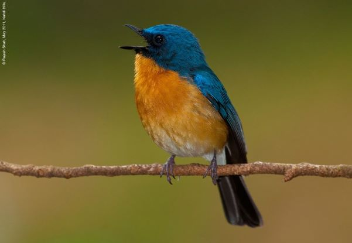
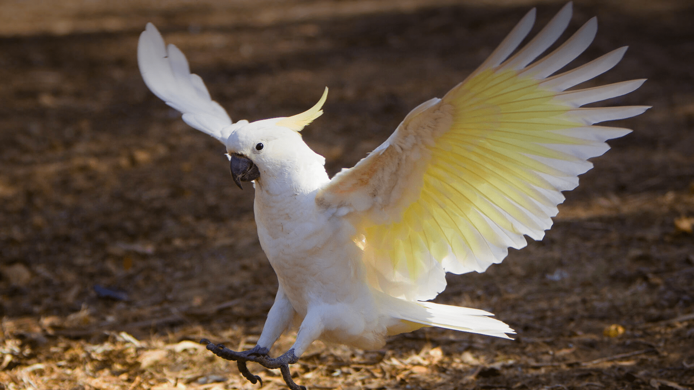
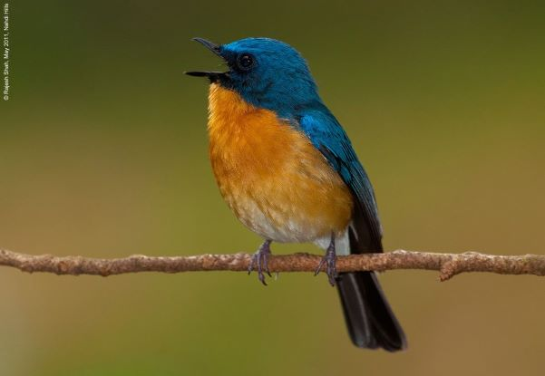
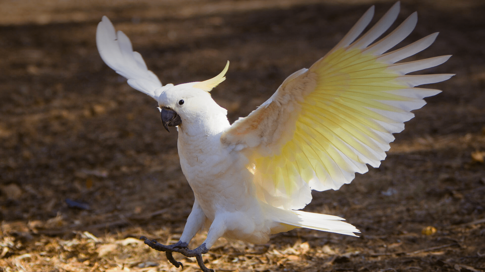

FAVOURITE PHOTOS  


HOME GET STARTED PHOTOS GEAR FORUM
WELCOME
Welcome to the fake birdwatching website.If this were a real site, it would be the ideal place to come to learn more about birdwatching, whether you are a beginer looking to learn how to get into binding, or an expert wanting to share ideas,tips,and photos with other like-minded people.
So don't waste time! Get what you new, then turn off that computer and get out into the great outdoors!
FAVOURITE PHOTOS

